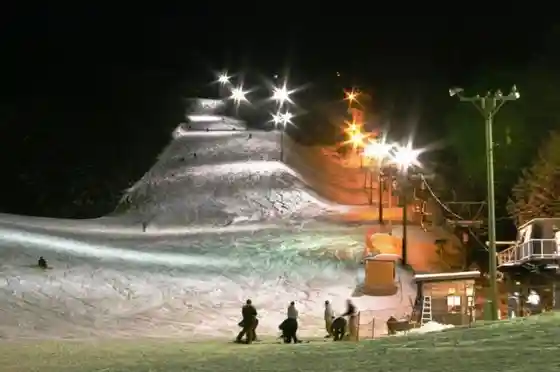
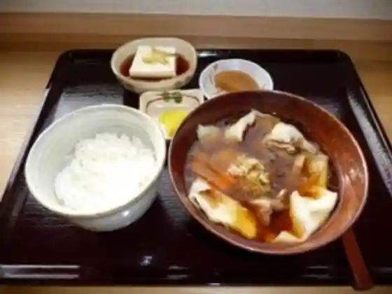
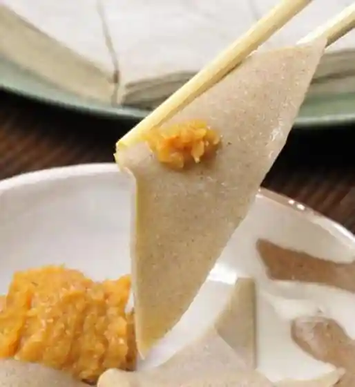
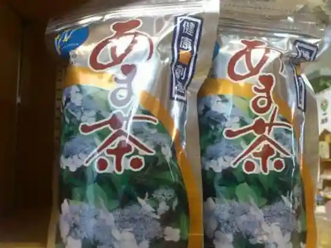

Son'ei Ku no He Ski Area
Kunohe, Iwate · 0195-42-2366 · Official / source link

Machi no Eki (Masazane Kan)
Kunohe, Iwate · 0195-42-2226 · Official / source link

Nambu Kakke (Sobakakke)
Kunohe, Iwate · 0195-42-3148 · Official / source link

Ama Cha
Kunohe, Iwate · 0195-42-4400 · Official / source link

Yama Bundo Jusu
Kunohe, Iwate · 0195-42-4400 · Official / source link
Soba Uchi Experience
Kunohe, Iwate · 0195-42-4001 · Official / source link
Koropokkuru Land
Kunohe, Iwate · 0195-42-4062 · Official / source link
Roadside Station (Oritsume) Odode Kan Resutoran
Kunohe, Iwate · 0195-42-4400 · Official / source link
Oritsume Go Taki
Kunohe, Iwate · 0195-42-2111 · Official / source link
Pogatto Park Fureai Plaza
Kunohe, Iwate · 0195-42-2111 · Official / source link
Kunohe Forest Park
Kunohe, Iwate · 0195-42-2111 · Official / source link
Toi Ryotaku Mizu Basho Park
Kunohe, Iwate · 0195-42-2111 · Official / source link
Furusato Sozo Kan
Kunohe, Iwate · 0195-42-4001 · Official / source link
Oritsume Gaku no Himebotaru Seisokuchi
Kunohe, Iwate · Official / source link